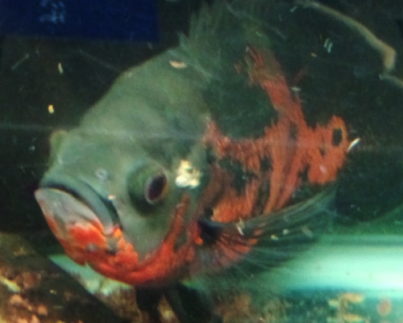
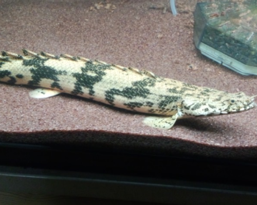
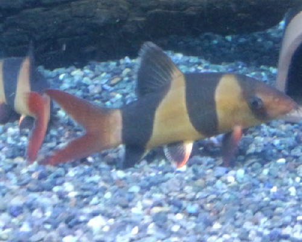
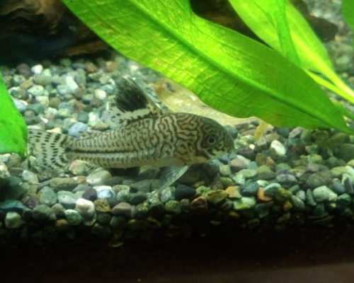
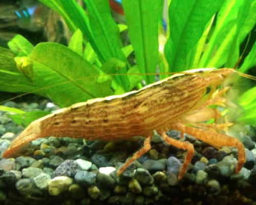
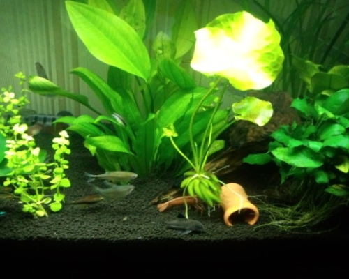

魚の紹介
タイガーオスカー

シクリッドの仲間。エサをくれる人間の顔を覚えるのでペットフィッシュとして人気。
やや大型化するので単独で飼育する場合でも９０ｃｍ以上の水槽が必要。
底砂を穿り返すのでベアタンク飼育のほうが楽かも？
ポリプテルス・エンドリケリィ

古代魚の仲間。非常に丈夫で飼いやすい。
大型化するので最低でも９０ｃｍ水槽。理想は１２０ｃｍ以上の
水槽が好ましい。
国内でもブリーダーさんによる養殖が進んでいるので入手は簡単。
クラウンローチ

ドジョウの仲間です。（外国産）毒々しい見た目と裏腹に無毒である。
怒ると目の下辺りからでっかいツノを出してきます。
また、寝る時は横になって寝る。複数飼育だと同じ個所にまとまって隠れるなどカワイイ奴である。
観賞魚として人気だがやや大きくなるので９０ｃｍ以上の水槽が推奨される。成長速度は比較的遅い。
コリドラスジュリー

小型種で人気のあるコリドラス種。
性格も温和で混泳しやすいのが魅力。
注意すべきは掃除屋のイメージが強いでしょうが、しっかり底物用のエサを与えないと
餓死してしまう点である。
６０ｃｍ以下の水槽で問題なく飼える。
ロックシュリンプ

外国産のエビさん。両手に扇状の房を持っており万歳の如く両手を上げて
流れてくるエサを引っかけて食べる習性がある。
エビは例外無く、水質にはうるさいので飼育にはややコツがいる。
見ていて面白いので一度挑戦してみるのは大いに有り。
バナナプラント

水草です。根っこの当たりにある房がバナナに似てることからこの名前が付きました。
食べられないので注意。入手しづいらい場合があるので注意。